Alex Bikfalvi at University Carlos III of Madrid
You are here: Home > Research > Peer-to-Peer Video Caching > Evaluation
Evaluation
Items
- Effect of the cache size
- Effect of the number of streams
- Effect of the stream popularity (updated)
- Effect of the stream lifespan
- Effect of the peer uplink bandwidth (updated)
- Distribution of stream replicas (new)
Effect of the cache size
In this evaluation scenario we change the peers' cache size.
|
Variable parameter |
Cache size: 10, 20, ..., 100, 200, ..., 500 segments |
| Fixed parameters | Stream size: 100 segments Number of streams: 1000 Number of peers: 1000
Workload characteristics: - spatial aspect of the stream popularity (alpha for zipf): 0.8 - temporal aspect of the stream popularity (mean of the lognormal function for session lifespan): 8
(for details on how the workload characteristic looks for above values see the description of the input data for the measurements of the spatial and temporal effect of the popularity) |
Click on the figures to open the PDF.
Figure 1.1. 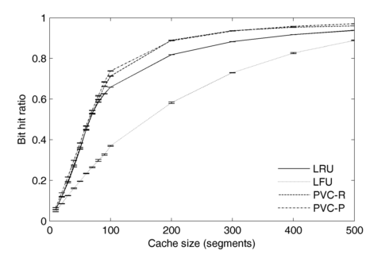 Figure 1.2. 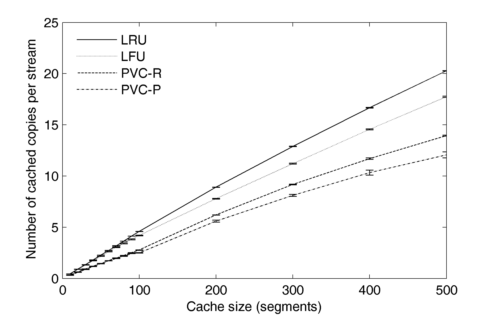
|
Figure 1.1. |
Bit hit ratio vs. the cache size (expressed in stream segments). Note that all streams have the size of 100 segments. Alternatively, we can use the ratio between the cache size and the stream size, in the current case that all streams have the same size. |
| Figure 1.2. | The average number of cached stream copies vs. the cache size. |
| Figure 1.3. | The average uplink bandwidth utlization vs. the cache size. (I understand this figure is not that representative since the average is done over all peers, including those which don't serve full streams - hence the small value; perhaps a better illustration is the CDF of the bandwidth utilization across peers) |
Effect of the number of streams
In this evaluation scenario, we change the number of streams.
Notice: I made a calculation error, and I set improperly the time scaling factor leading to some sessions being lost for a high number of streams (e.g. in fig. 2.1 it looks as if LRU is getting better for 8000-10000 streams, which probably is due to the incorrect time scale). There are currently simulations running to obtain new data.
|
Variable parameter |
Number of streams: 100, 200, ..., 1000, 2000, ..., 10000 streams |
| Fixed parameters | Stream size: 100 segments Cache size: 200 segments Number of peers: 1000
Workload characteristics: - spatial aspect of the stream popularity (alpha for zipf): 0.67 (needs to be lower to accomodate 10000 streams) - temporal aspect of the stream popularity (mean of the lognormal function for session lifespan): 8
(for details on how the workload characteristic looks for above values see the description of the input data for the measurements of the spatial and temporal effect of the popularity) |
Figure 2.1. 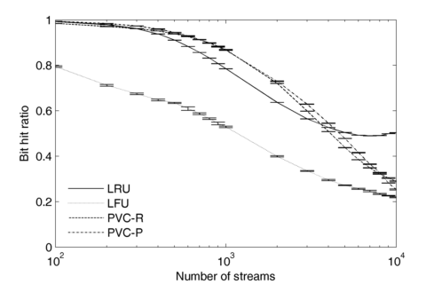Figure 2.2. 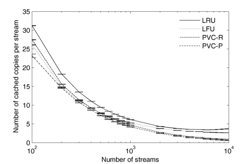
|
Figure 2.1. |
Bit hit ratio vs. the number of streams. |
| Figure 2.2. | The average number of cached stream copies vs. the number of streams. |
Effect of the stream popularity (spatial aspect of the popularity)
In this evaluation scenario, we change the slope of the stream popularity.
Update: this values from these figures are now correct.
|
Variable parameter |
Slope of the stream popularity (alpha of the zipf distribution): 0.3, 0.4, ..., 1 (see figure 3.1 and its explanation below on how each alpha value afects the probability distribution) |
| Fixed parameters | Stream size: 100 segments Cache size: 200 segments Number of peers: 1000 Number of streams: 1000
Workload characteristics: - temporal aspect of the stream popularity (mean of the lognormal function for session lifespan): 8
(for details on how the workload characteristic looks for above value see the description of the input data for the measurements of the temporal effect of the popularity) |
Figure 3.1. 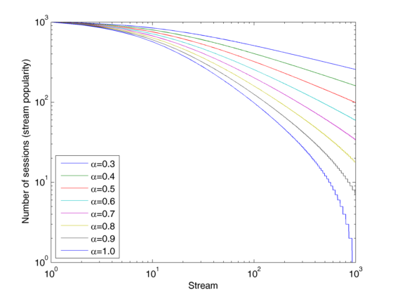Figure 3.2. 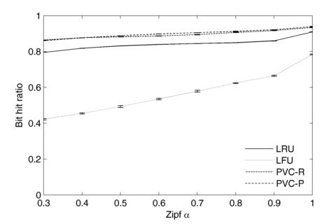
Figure 3.2. 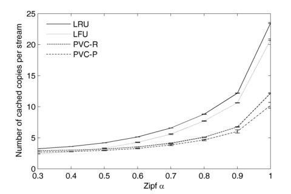Figure 3.3. 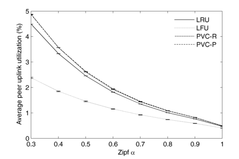
|
Figure 3.1. |
The change of the stream popularity with alpha (the input parameter for this evaluation scenario). The number of sessions for the most popular stream is always the same (1000 sessions). Please note the distribution is not zipf, but generalized zipf-like (see the Medisyn paper for additional details). As alpha decreases, the popularity distribution gets more uniform. In the current scenation, alpha was upper-bounded at 1 (above this value, a number of streams would get 0 sessions in the workload). |
| Figure 3.2. | Bit hit ratio vs. alpha. |
| Figure 3.3. | The average number of cached stream copies vs. alpha. |
| Figure 3.4. | The average uplink bandwidth utlization vs. alpha. |
Performance increases with alpha: as the difference in popularity between popular and unpopular streams gets greater, there will be more sessions for the popular streams, and the trashing of these streams is lower. On the downside, there will also be more copies of the popular streams.
Effect of the stream lifespan (temporal aspect of the popularity)
Variable parameter |
Mean of the lognormal function describing the stream popularity over time: 3, 4, 5, ..., 8 (see figure 4.1 and its explanation below on how each mean value afects the stream popularity) |
| Fixed parameters | Stream size: 100 segments Cache size: 200 segments Number of streams: 1000 Number of peers: 1000
Workload characteristics: - spatial aspect of the stream popularity (alpha for zipf): 0.8
(for details on how the workload characteristic looks for above value see the description of the input data for the measurements of the spatialeffect of the popularity) |
Figure 4.1. 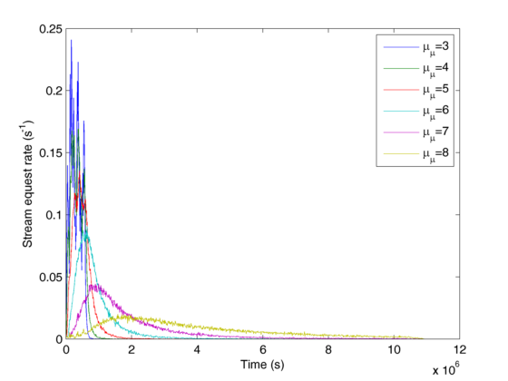 Figure 4.2. 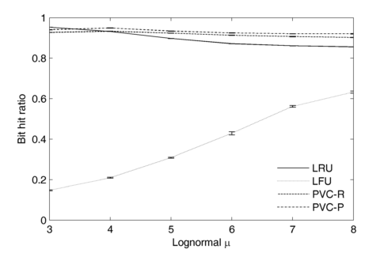
Figure 4.3. 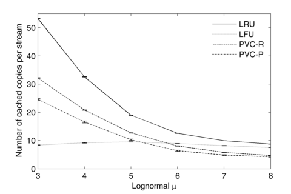Figure 4.4. 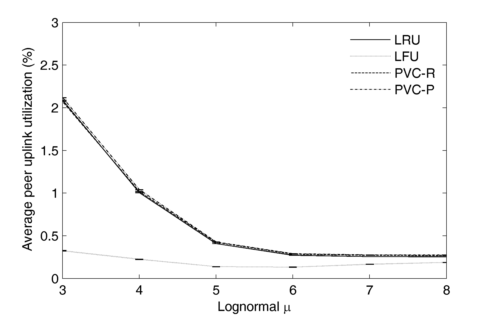
Figure 4.1. |
The stream request rate over time (also called stream's lifespan) is modeled by the PDF of the lognormal distribution, weighted by the stream popularity (i.e. the shape would be the same but the amplitude will be different). For two different streams not to have exactly the same lifespan, the parameters of the lognormal distribution (mean and variance) are considered normally distributed random variables.
In order to change the burstiness of the requests, we adjust the mean of the lognormal function. For a low mean, the session lifespan is small; when the mean is large the session lifespan is elongated over time (the overall popularity of the streams stays the same).
The figure shows the request rate for all streams over time. For a low mean of the lognormal, the stream popularity increases fast and decreases fast, whereas for a high mean, the popularity increases and decreases slow. Note that the skew of the function is approximately the same for all streams. |
| Figure 4.2. | Bit hit ratio vs. lognormal mean. |
| Figure 4.3. | The average number of cached stream copies vs. lognormal mean. |
| Figure 4.4. | The average uplink bandwidth utlization vs. lognormal mean. |
Effect of peer uplink bandwidth
Variable parameter |
Peer uplink bandwidth: 1, 2, ..., 10 Mbps |
| Fixed parameters | Stream size: 100 segments Cache size: 200 segments Number of streams: 1000 Number of peers: 1000 Stream bit rate: 1 Mbps
Workload characteristics: - spatial aspect of the stream popularity (alpha for zipf): 0.8 - temporal aspect of the stream popularity (mean of the lognormal function for session lifespan): 8
(for details on how the workload characteristic looks for above values see the description of the input data for the measurements of the spatial and temporal effect of the popularity) |
Figure 5.1. 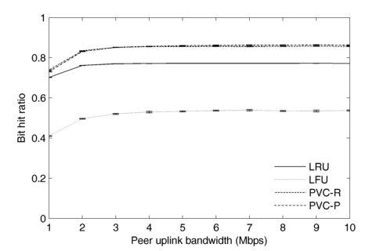Figure 5.2. 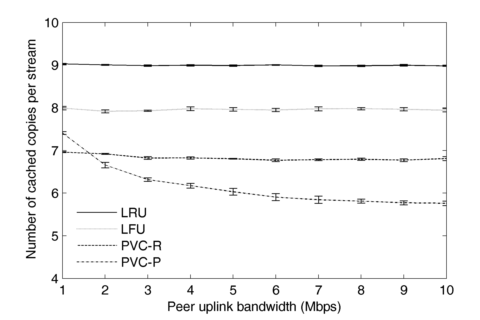
Figure 5.1. |
Bit hit ratio vs. peer uplink bandwidth. |
| Figure 5.2. | The average number of cached stream copies vs. peer uplink bandwidth. |
| Figure 5.3. | The average uplink bandwidth utlization vs. peer uplink bandwidth. |
Distribution of stream replicas
Description |
This figure illustrates the distribtion of stream copies (or replicas) for the analyzed cache algorithms |
| Fixed parameters | Stream size: 100 segments Cache size: 200 segments Number of streams: 1000 Number of peers: 1000 Peer uplink bandwidth: 5 Mbps Stream bit rate: 1 Mbps
Workload characteristics: - spatial aspect of the stream popularity (alpha for zipf): 0.8 - temporal aspect of the stream popularity (mean of the lognormal function for session lifespan): 8
(for details on how the workload characteristic looks for above values see the description of the input data for the measurements of the spatial and temporal effect of the popularity) |
Figure 6.1. |
The cumulative distribution function of the stream number of copies, where the streams are ordered with their popularity. If the number of copies would be the same for all streams, agostic of their popularity, the CDF should be a straight line. The faster the CDF increases means more copies are kept in the cache for the hot streams, while less copies are saved for the cold streams. The figure clearly shows that both PVC algorithms are better that LRU and LFU at redistributing the cache space from the hottest streams to cold streams. Among these, PVC-P is the best, because of the caching indication sent by old peers to new peers. |
Last updated: February 21, 2010